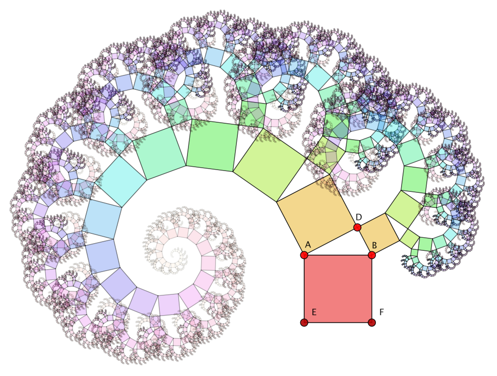

A Programming Environment
The CindyScript programming language is a powerful tool for adding all kinds of enhancements to Cinderella constructions. It is designed in a way such that the interplay with the geometric part of Cinderella and the simulations of CindyLab is as smooth as possible. Its functional design allows for high-level programming that enables rapid prototyping of interactive scenarios. The CindyScript language takes advantage of the fact that it runs in an environment in which on the one hand, facilities are present for graphical output and mouse-driven input (the geometric part), and on the other hand, physical simulations can be "outsourced" to the CindyLab simulation engine. As a consequence, the user can focus on programming the core problem. Very often, only a few lines of code are needed to achieve the desired behavior. This is in strong contrast to common programming languages, where a substantial part of programming goes into the creation of a graphical mouse-driven user interface.
Sample Applications
The possibilities of CindyScript are endless and restricted only by the imagination of the user (and perhaps disk space), as in any other programming language. Nevertheless, we here want to present a few core application areas of the language.Enhanced Drawing Output
One of the core facilities of CindyScript is that one can programmatically produce graphical output in a geometric view. When using a dynamic geometry system, one very often encounters situations in which it would be desirable to extend a geometric construction by more and more elements to such an extent that it becomes unreasonable to do this constructively. The programming facilities of CindyScript can be used to create these elements automatically.CindyScript offers access to geometric transformations, such that it is very easy to create functionally very complicated geometric drawings with only a few lines of code.
 |
| A scripted "Pythagoras tree" |
Programmatic Drawing
There is a special class of applications that cannot be covered at all by a classical approach to dynamic geometry. Constructions in dynamic geometry are inherently like unbranched programs, in which all calculations are always performed. Thus it is inherently difficult to include logical decisions or algorithmic behavior in a dynamic geometry program. Usually, these problems are resolved by conditionally controlling the visibility behavior of geometric elements by intersection properties (so-called Boolean points). Cinderella.2 also offers this functionality, but at the same time, CindyScript provides a much better and more elegant way of dealing with this problem.CindyScript is a full-featured high-level programming language in which it is easy to implement arbitrary algorithmic behavior. Thus even complicated algorithms can be included on a general level in a dynamic geometry environment. Graphical output can be easily included in such algorithms.
 |
| The Delaunay and Voronoi diagrams of a point set |
Analysis of Mathematical Functions
In particular, CindyScript offers advanced routines for function plotting. Thus it is possible to draw and analyze functions dealing with derivatives, extrema, and so on. Functions can be entered directly in a drawing, and results can be shown instantly. Making use of this together with the HTML export features of Cinderella, it is easy to generate interactive worksheets that allow for a wide variety of modes of analysis of functions. Functions can also be defined by geometric dependencies of the geometric constructions, which facilitates combining input and analytic parts in one example.
 |
| Newton iteration to find a root of a function |
Controlling the Behavior of Constructions
A particularly interesting scenario arises when CindyScript controls the positions of free elements. The movements controlled by CindyScript usually have priority over those performed by the user. Thus you can influence the effect of user input. The following example illustrates this in a very simple scenario. The picture below demonstrates Pick's theorem, which allows one to calculate the area of a triangle by calculating the integer points in the polygon and the integer points on the boundary. |
| A demonstration of Pick's theorem |
Pick's theorem applies only to polygons whose vertex coordinates are pairs of integers, a restriction that is usually not supported by a dynamic geometry program. However, by adding the following three lines of code one can alter the behavior of the three free points:
A.xy=round(A); B.xy=round(B); C.xy=round(C);
Although the points are freely movable, this code forces each vertex to snap to the closest integral point. All the text and all the green and yellow points in this example are also generated with CindyScript.
Design and Features
CindyScript was designed to suit the needs of programming mathematical problems in an environment in which the input parameters change dynamically due to user interaction. On the one hand, this was achieved by providing a language that has both powerful data types (real numbers, complex numbers, lists, vectors, matrices, etc.) and powerful operations that can work on these data. On the other hand, it was achieved by taking into account the real-time requirements for interactive user input already when the language was designed.High-Level Functional Programming
CindyScript is a functional language. This means that all operations are expressed as the application of functions to data. Programming functionally may take some time to get used to, but it offers a very high expressiveness, such that it is possible to describe complex situations with just a few lines of code. For instance, the following three lines of code calculate and print a list of the prime numbers smaller than 100:
divisors(x):=select(1..x,mod(x,#)==0); primes(n):=select(1..n,length(divisors(#))==2); print(primes(100));
The first line defines a function that returns a list of all divisors of a number
x. The second line provides a function that returns a list of all numbers smaller than n that have exactly two divisors. These are exactly the prime numbers smaller than n. The output of the algorithm is the following line:[2,3,5,7,11,13,17,19,23,29,31,37,41,43,47,53,59,61,67,71,73,79,83,89,97]Using these high-level programming facilities together with graphics input and output offers possibilities that are not available in most other programming environments. The picture below shows an iteratively defined plant-like structure that was programmed in CindyScript. The code for generation of this plant is shown next to it. It essentially uses only elementary drawing functions, advanced geometric transformations, and functional programming to create the entire drawing.
 |  |
|
| Growing a plant in a view |
Real-Time Calculations
CindyScript code can be evaluated for even the tiniest move of a geometric configuration. In this way, it is possible to achieve real-time interaction with geometric drawings. A user selects a point, moves it, and then can directly observe the changing results of the calculations. Although CindyScript is an interpreted language, it is still fast enough to create a fluent drawing impression for most standard situations. The possibility of dynamically running programs that immediately react to user input opens a wide variety of applications and interactive scenarios. Here the applications range from explanations at an elementary- and high-school level through university courses up to investigations in sophisticated mathematical research. The example below shows a snapshot of an illustration of linear regression using the least squares method. The picture is dynamically updated when points are moved or added. |
| Linear regression by Gaussian approximation |
Exact Timing
CindyScript provides various possibilities for synchronizing programs both with real time and with the time of a physics simulation. Thus one can easily create simulations that involve timing behavior. This can be very useful in programming interactive games or edutainment scenarios in which, for instance, the task of solving an exercise is bound to time restrictions. The ability to synchronize CindyScript with the timing of physics simulations can be used in two directions. Thus one can use this technique to synchronize a physics simulation with real time. Alternatively, it is possible to couple programming time and computation time, making it possible to slow down or speed up a simulation synchronously with a computation.
 |
| A real-time clock |
Advanced Plotting
One line of CindyScript code is sufficient for simple function plotting. For example,
plot(sin(x)) will immediately invoke the graph of the sine function to be plotted in the view. However, Cinderella also provides several possibilities and enhancements that allow for the direct display of maxima, minima, and inflection points. With these features it is easy to make a visually meaningful analysis of functions. It is also possible to generate two-dimensional function plots that use color values for different function values. It is thus possible to create images of two-dimensional data quite easily. The picture below shows the density distribution of the function sin(dist(x-A)*dist(x-B)) for two points A and B. |
| Cassinian ovals as waves |
Page last modified on Sunday 04 of September, 2011 [21:39:44 UTC].
The original document is available at
http://doc.cinderella.de/tiki-index.php?page=A%20Programming%20Environment